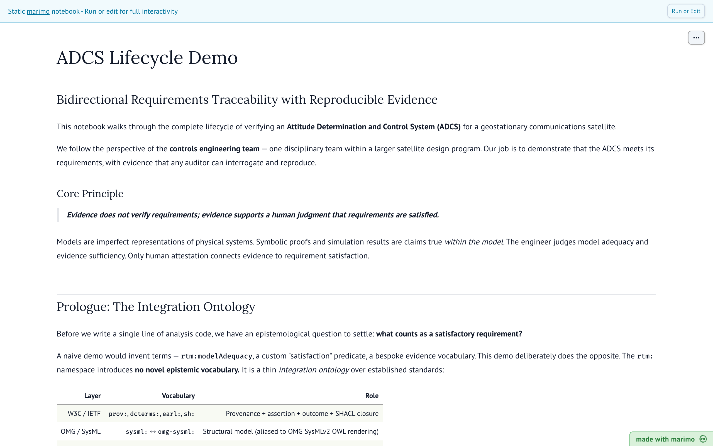

01 · Marimo notebook
ADCS Lifecycle Demo
Bidirectional requirements traceability for a satellite attitude-determination and control system. Walks the full verification lifecycle, with evidence any auditor can interrogate and reproduce.
Open demo →